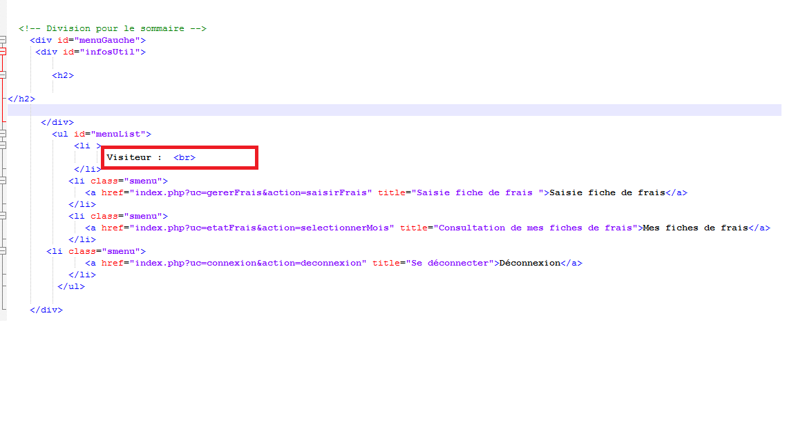
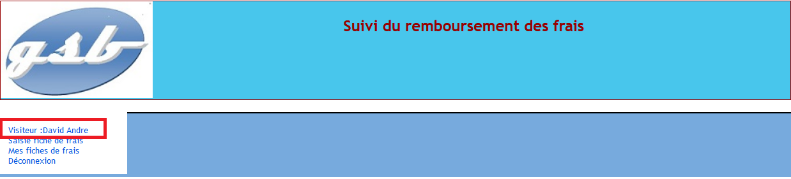
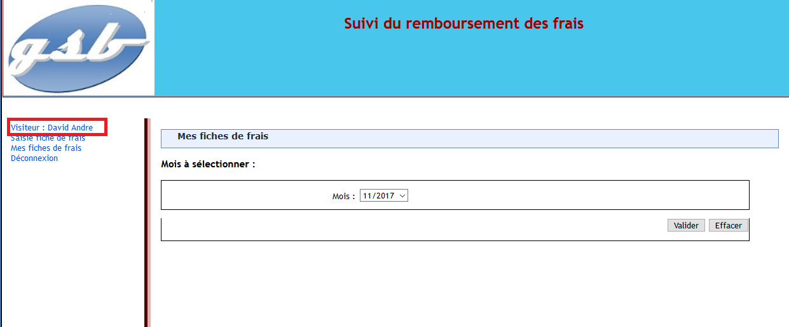
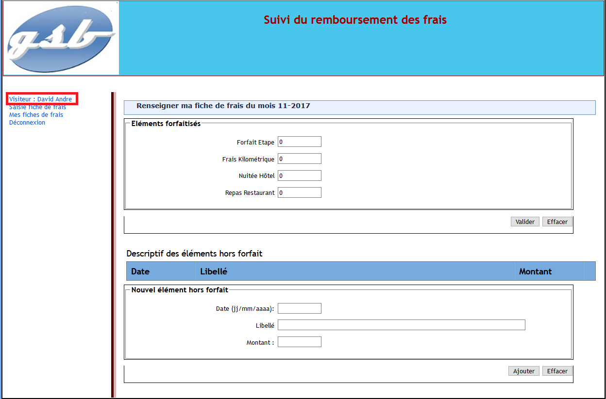

Ppe GSB Bug
BTS SIO Option SLAM
Ppe Bug
Présentation :
Le laboratoire Galaxy Swiss Bourdin (GSB) est issu de la fusion en 2009 entre le géant américain Galaxy, spécialisé dans le secteur des maladies virales dont le SIDA et les hépatites, et le conglomérat européen Swiss Bourdin. L’entité Galaxy Swiss Bourdin Europe a établi son siège administratif à Paris tandis que le siège social de la multinationale est situé à Philadelphie, en Pennsylvanie, aux États-Unis. L’entreprise compte 480 visiteurs médicaux en France métropolitaine et 60 dans les départements et territoires d’outre-mer. Ceux-ci sont répartis en 7 secteurs géographiques : Paris-Centre, Sud, Nord, Ouest, Est, DOM-TOM Caraïbes-Amériques, DOM-TOM Asie-Afrique). Les visiteurs médicaux démarchent les professionnels de santé susceptibles de prescrire aux patients les produits du laboratoire. L’objectif d’une visite n’est pas de vendre mais d’actualiser la connaissance de ces professionnels sur les produits de l’entreprise. Les déplacements qu’ils mènent, engendrent des frais qui doivent être pris en charge par la comptabilité. Une gestion forfaitaire des principaux frais permet de limiter les justificatifs. Le remboursement est fait après le retour de ces pièces. Une gestion unique et informatisée de ces frais et remboursements pour l’ensemble des visiteurs médicaux est souhaitée ainsi qu’un accès plus direct aux données du personnel.
Compétences :
A 1.1.1 Analyse du cahier des charges d'un service à produire. A 1.2.2 Rédaction des spécifications techniques de la solution retenue (adaptation d'une solution existante ou réalisation d'une nouvelle). A 2.2.1 Suivi et résolution d'incidents. A 4.1.3 Conception ou adaptation d'une base de données. A 4.1.7 Développement, utilisation ou adaptation de composants logiciels. A 4.2.3 Réalisation des tests nécessaires à la mise en production d'éléments mis à jour.
Mission (BUG 1):
Mail reçu par Agathe Kisay :

Visualisation :
Comme nous pouvons le voir ci-contre, certains employés bénéficies d'une date de départ mais leurs comptes apparaissent toujours en tant qu'"Actif".

Correction du bug :
Pour ce faire, nous allons rajouter une fonction qui nous permettras de récupèrer la date de départ de l'employé. Si aucune n'est renseigné, nous l'affecterons à O. Si non, "N" sera assigné.
Voici la fonction ajouté afin de mettre la valeur "O" dans la colonne actif si l'employé a quitté l'entreprise(possède donc une date de départ) et la valeur "N" si l'employé est encore dans l'entreprise (ne possède pas de date de départ)

Voici le mail envoyé ainsi que la fonction adéquate à la modification:

Conclusion :
Une fois la fonction intégrée dans le code, le bug est fixé et les employés qui quitteront l'entreprise seront désormais inactif et n'auront donc plus aucun accés à leur compte GSB. Nous pouvons donc ainsi voir ci-dessous que les employés Bunisset et Daburon ayant quitté l'entreprise en 2013 ne bénéficie que d'un compte inactif, ils ne peuvent donc plus se connecter.

Mission (BUG 2):
Mail reçu par Agathe Kisay :

Nous avons saisi le bug dans Mantis, c'est un système de suivi d'anomalies logicielles basé sur une interface web
Voici ce qui à été saisi

Visualisation :
En effet, on remarque sur la photo ci dessous que lors de la connexion, que le nom et le prénom du visiteur n'est pas à la suite de "Visiteur:" :

De surcroit, dans la vue du sommaire, on remarque que rien ne suit le texte "Visiteur : "
Il faudra donc créer des variables de session contenant le nom et le prénom du visiteur afin de pouvoir les affichés à chaque page de l'application.
Ensuite, dans le script des fonctions pour l'application GSB (ci dessous), on remarque une fonction permettant de créer une variable de session contenant l'id du visiteur.

Grâce à cette fonction, nous ajoutons deux variables de session récupérant le nom et le prénom du visiteur.

De plus, le nom de la fonction à été nommé "creationSession" afin que ce dernier soit plus explicite.
Par la suite, dans le contrôleur de connexion, après avoir récupérer les informations du visiteur dans des variables, nous appelons la fonction "creationSession" possédant comme paramètre l'id le nom et le prénom du visiteur permettant de créer ces dernières en variable de session.

Pour finir, dans la vue du sommaire, nous ajoutons à la suite de "Visiteur :" , le nom et le prénom du visiteur grâce aux variables de session.

Conclusion :
Pour finir, on remarque bien que dans les 3 pages possibles, le sommaire, état des frais et la gestion des frais, que les informations du visiteurs sont présentent
  Nous pouvons donc cloturer le bug sur Mantis